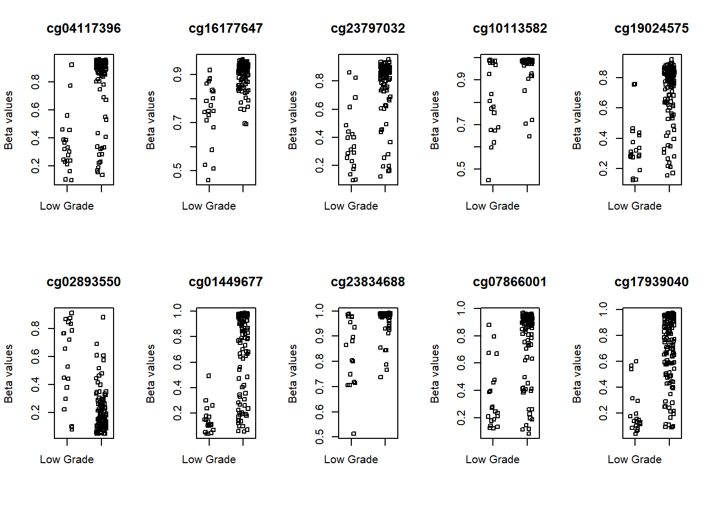
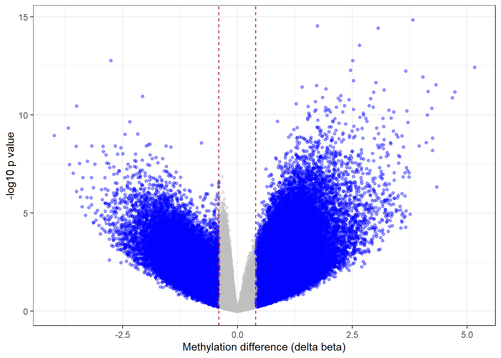

#Loading
library(tidyverse)
library(ggplot2)
library(dplyr)
library(MASS)
library(readxl)
library(flextable)
library(moments)
library (GGally)
library(patchwork)
library(gridExtra) # Cargar el paquete gridExtra
library(TCGAbiolinks)
library(IlluminaHumanMethylation450kanno.ilmn12.hg19)
library(IlluminaHumanMethylation450kmanifest)
library(minfi)
library(limma)
library(missMethyl)
library(DMRcate)
library(Gviz)
library(ggplot2)
library(RColorBrewer)
library(edgeR)
library(sesame)
library(UCSCXenaTools)Metilación
Se utiliza este codigo para analizar y visulizar los datos de ADN metilado
data.met = readRDS(file = "data.met.RDS")
# met matrix # SummarizedExperiment::assay(data.met): Esta parte del código accede
# a la matriz de datos almacenada en el objeto data.met utilizando la función assay()
# a los datos de metilación del ADN en un objeto SummarizedExperiment a un objeto de tipo data.frame
# la salida es una dataframe de el codigo de cad muestra y identificador del sitio CpG específico que está en relación con la metilación del ADN
met <- as.data.frame(SummarizedExperiment::assay(data.met))
# clinical data se utiliza para extraer y convertir los metadatos clínicos asociados
# describcion de cada pasient
clinical1 <- data.frame(data.met@colData) #Esta parte del código accede a la información de los metadatos clínicos almacenados en el objeto data.met utilizando el atributo colData
# get the 450k annotation data e utiliza para obtener la información de anotación para el array de metilación del ADN Illumina HumanMethylation450k en la versión del genoma hg19.
ann450k <- getAnnotation(IlluminaHumanMethylation450kanno.ilmn12.hg19)
## remove probes with NA se utiliza para calcular el número de valores faltantes (NA) en cada fila del objeto
probe.na <- rowSums(is.na(met))
table(probe.na == 0)
FALSE TRUE
156211 329366 #FALSE TRUE
#103553 382024
# chose those has not NA values in rows
# Para filtrar y seleccionar las filas del objeto met que no tienen valores faltantes, con el objetivo de trabajar solo con los datos completos para análisis posteriores.
probe <- probe.na[probe.na == 0]
# para seleccionarlas filas que no tienen valores faltantes.
## la salida es una dataframe de met aniterior pero sin valores faltante
met <- met[row.names(met) %in% names(probe), ]
## remove probes that match to chromosome X and Y
# para eliminar las filas que corresponden a los cromosomas X e Y y mantiene solo las filas que contienen información de otros cromosomas.
keep <- !(row.names(met) %in% ann450k$Name[ann450k$chr %in% c("chrX","chrY")])
table(keep)keep
FALSE TRUE
6284 323082 met <- met[keep, ]
rm(keep) # remove no further needed probes.
## remove SNPs overlapped probe # se utiliza para contar el número de valores NA (ausentes) y no NA en la columna Probe_rs del objeto ann450k.
table(is.na(ann450k$Probe_rs))
FALSE TRUE
87018 398494 # probes without snp
no.snp.probe <- ann450k$Name[is.na(ann450k$Probe_rs)]
#se seleccionan las sondas que tienen un identificador SNP asignado.
snp.probe <- ann450k[!is.na(ann450k$Probe_rs), ]
#snps with maf <= 0.05
#identifica las sondas en el objeto snp.probe que tienen
#una frecuencia alélica mínima (MAF) menor o igual a 0.05 y almacena sus nombres en el vector snp5.probe. Estas sondas pueden ser de interés para estudios que se centren en variantes genéticas menos comunes.
snp5.probe <- snp.probe$Name[snp.probe$Probe_maf <= 0.05]
# filtre met
## filtra el objeto met para mantener solo las filas que corresponden a las sondas sin identificador SNP y las sondas con MAF menor o igual a 0.05
met <- met[row.names(met) %in% c(no.snp.probe, snp5.probe), ]
#remove no-further needed dataset
rm(no.snp.probe, probe, probe.na, snp.probe, snp5.probe)
## Removing probes that have been demonstrated to map to multiple places in the genome.
# list adapted from https://www.tandfonline.com/doi/full/10.4161/epi.23470
crs.reac <- read.csv("cross_reactive_probe.chen2013.csv")
#extrae la columna "TargetID" del objeto crs.reac, excluyendo la primera fila.
crs.reac <- crs.reac$TargetID[-1]
# filtre met (-which ) para excluye las sondas que coinciden con secuencias de ADN cruzadas o no específicas.
met <- met[ -which(row.names(met) %in% crs.reac), ]
bval1 <- met
## converting beta values to m_values
## m = log2(beta/1-beta)
mval1 <- t(apply(met, 1, function(x) log2(x/(1-x))))
#_________Differential methylation analysis_____________#
table(clinical1$paper_Histologic.grade, clinical1$paper_mRNA.cluster)
Basal_squamous Luminal Luminal_infiltrated Luminal_papillary ND
High Grade 143 28 79 120 4
Low Grade 1 0 0 20 0
ND 0 0 1 2 0
Neuronal
High Grade 20
Low Grade 0
ND 0# filtering and grouping
#clinical <- clinical[, c("barcode", "paper_Histologic.grade", "paper_mRNA.cluster")]
clinical<-clinical1
clinical<- clinical %>%
dplyr::select(barcode, paper_Histologic.grade, paper_mRNA.cluster)
# remove rows with missing values
#clinical <- na.omit(clinical)
clinical <- drop_na(clinical)
#clinical <- clinical[-which(clinical$paper_mRNA.cluster == "ND"), ]
clinical <- clinical %>%
filter(paper_mRNA.cluster != "ND")
#clinical <- clinical[-which(clinical$paper_Histologic.grade == "ND"), ]
clinical<-clinical %>%
filter(paper_Histologic.grade != "ND")
#clinical <- clinical[which(clinical$paper_mRNA.cluster == "Luminal_papillary"), ]
clinical<-clinical %>%
filter(paper_mRNA.cluster == "Luminal_papillary")
barcode <- clinical$barcode
barcode<- clinical %>%
dplyr::select(barcode)
########### # removing samples from meth matrixes
bval<-bval1
bval <- bval[, colnames(bval) %in% row.names(clinical)]
dim(bval)[1] 296027 140[1] 296027 140# Making sure about samples in clinical and matrixes and their order
table(colnames(mval) %in% row.names(clinical))
TRUE
140
TRUE
140 [1] TRUE[1] TRUE# Making grouping variable
#clinical$paper_Histologic.grade <- as.factor(clinical$paper_Histologic.grade)
clinical <- clinical %>%
mutate(paper_Histologic.grade = as.factor(paper_Histologic.grade))
# levels(clinical$paper_Histologic.grade) # re-orders levels of a factor
# clinical$paper_Histologic.grade <- relevel(clinical$paper_Histologic.grade, ref = "Low Grade")
clinical <- clinical %>%
mutate(paper_Histologic.grade = relevel(paper_Histologic.grade, ref = "Low Grade"))
#_____________ DMC analysis________________#
# used to create a design matrix for a linear regression model
# symbol indicates that you want to model the response variable (not specified here)
# based on the predictor variable
design <- model.matrix(~ paper_Histologic.grade, data = clinical)
# fit the linear model # MArrayLM: Microarray Linear Model Fit
# Make sure the number of rows in mval matches the number of rows in design
# Fit the linear model
fit <- lmFit(mval, design)
# fit the linear model
fit <- lmFit(mval, design)
# para mejorar la precisión de las estimaciones y controlar el error de tipo I.
fit2 <- eBayes(fit)
# extracting significantly methylated probes
# aplicar los pasos de regularización empírica y ajuste de valores de p.
deff.meth = topTable(fit2, coef=ncol(design), sort.by="p",number = nrow(mval), adjust.method = "BY")
# Visualization
# plot the top 10 most significantly differentially methylated CpGs
par(mfrow=c(2,5))
sapply(rownames(deff.meth)[1:10], function(cpg){
plotCpg(bval, cpg=cpg, pheno=clinical$paper_Histologic.grade, ylab = "Beta values")
})
$cg04117396
NULL
$cg16177647
NULL
$cg23797032
NULL
$cg10113582
NULL
$cg19024575
NULL
$cg02893550
NULL
$cg01449677
NULL
$cg23834688
NULL
$cg07866001
NULL
$cg17939040
NULL# making a volcano plot
#making dataset se utiliza accede a la columna correspondiente al valor de p en el objeto fit2,
#calcula el logaritmo negativo en base 1fit2 p.value of paper_Histologic.gradeHigh Grade
dat <- data.frame(foldchange = fit[["coefficients"]][,2],
logPvalue = -log10(fit2[["p.value"]][,2]))
# ver si el valor absoluto de la columna foldchange en dat es menor que 0.4. Esto devuelve un vector de valores TRUE o FALSE
dat$threshold <- as.factor(abs(dat$foldchange) < 0.4)
#Visualization
cols <- c("TRUE" = "grey", "FALSE" = "blue")
ggplot(data=dat, aes(x=foldchange, y = logPvalue, color=threshold)) +
geom_point(alpha=.4, size=1.2) +
scale_colour_manual(values = cols) +
geom_vline(xintercept = 0.4, colour="#990000", linetype="dashed") +
geom_vline(xintercept = - 0.4, colour="#990000", linetype="dashed") +
theme(legend.position="none") +
xlab("Methylation difference (delta beta)") +
ylab("-log10 p value") +
theme_bw() +
theme(legend.position = "none")
# setting some annotation
# para realizar una anotación de metilación de CpG en el objeto mval
myAnnotation <- cpg.annotate(object = mval, datatype = "array",
what = "M",
analysis.type = "differential",
design = design,
contrasts = FALSE,
coef = "paper_Histologic.gradeHigh Grade",
arraytype = "450K",
fdr = 0.001)
#el objeto myAnnotation contiene información anotada de metilación de CpG, incluyendo ubicaciones genómicas, estadísticas y metadatos adicionales relacionados con los CpG anotados.
str(myAnnotation)Formal class 'CpGannotated' [package "DMRcate"] with 1 slot
..@ ranges:Formal class 'GRanges' [package "GenomicRanges"] with 7 slots
.. .. ..@ seqnames :Formal class 'Rle' [package "S4Vectors"] with 4 slots
.. .. .. .. ..@ values : Factor w/ 22 levels "chr1","chr2",..: 1 2 3 4 5 6 7 8 9 10 ...
.. .. .. .. ..@ lengths : int [1:22] 30814 20969 15373 11252 13886 21203 17971 12475 6148 14891 ...
.. .. .. .. ..@ elementMetadata: NULL
.. .. .. .. ..@ metadata : list()
.. .. ..@ ranges :Formal class 'IRanges' [package "IRanges"] with 6 slots
.. .. .. .. ..@ start : int [1:296027] 812539 834183 834295 834356 837536 838486 839752 840274 840618 841289 ...
.. .. .. .. ..@ width : int [1:296027] 1 1 1 1 1 1 1 1 1 1 ...
.. .. .. .. ..@ NAMES : chr [1:296027] "cg18147296" "cg13938959" "cg12445832" "cg23999112" ...
.. .. .. .. ..@ elementType : chr "ANY"
.. .. .. .. ..@ elementMetadata: NULL
.. .. .. .. ..@ metadata : list()
.. .. ..@ strand :Formal class 'Rle' [package "S4Vectors"] with 4 slots
.. .. .. .. ..@ values : Factor w/ 3 levels "+","-","*": 3
.. .. .. .. ..@ lengths : int 296027
.. .. .. .. ..@ elementMetadata: NULL
.. .. .. .. ..@ metadata : list()
.. .. ..@ seqinfo :Formal class 'Seqinfo' [package "GenomeInfoDb"] with 4 slots
.. .. .. .. ..@ seqnames : chr [1:22] "chr1" "chr2" "chr3" "chr4" ...
.. .. .. .. ..@ seqlengths : int [1:22] NA NA NA NA NA NA NA NA NA NA ...
.. .. .. .. ..@ is_circular: logi [1:22] NA NA NA NA NA NA ...
.. .. .. .. ..@ genome : chr [1:22] NA NA NA NA ...
.. .. ..@ elementMetadata:Formal class 'DFrame' [package "S4Vectors"] with 6 slots
.. .. .. .. ..@ rownames : NULL
.. .. .. .. ..@ nrows : int 296027
.. .. .. .. ..@ elementType : chr "ANY"
.. .. .. .. ..@ elementMetadata: NULL
.. .. .. .. ..@ metadata : list()
.. .. .. .. ..@ listData :List of 4
.. .. .. .. .. ..$ stat : num [1:296027] -1.03 -1.91 -3.14 -3.62 3.29 ...
.. .. .. .. .. ..$ diff : num [1:296027] -0.035 -0.0835 -0.1329 -0.1832 0.1521 ...
.. .. .. .. .. ..$ ind.fdr: num [1:296027] 0.50219 0.17593 0.02214 0.00824 0.01649 ...
.. .. .. .. .. ..$ is.sig : logi [1:296027] FALSE FALSE FALSE FALSE FALSE FALSE ...
.. .. ..@ elementType : chr "ANY"
.. .. ..@ metadata : list()# DMR analysis # realiza un análisis de diferencial de metilación (DMR), utilizando la función dmrcate
# o identification and extraction of differentially methylated regions
DMRs <- dmrcate(myAnnotation, lambda=1000, C=2)
# sese utiliza para extraer las ubicaciones genómicas de los DMRs detectados en
# forma de un objeto de la clase "GRanges" del paquete "GenomicRanges". Esto permite acceder y manipular fácilmente la información de los DMRs.
results.ranges <- extractRanges(DMRs)
# Estos metadatos proporcionan información detallada sobre los DMRs detectados, como el número de CpGs involucrados,
# las estadísticas de diferenciación y los genes asociados. Puedes utilizar esta información para realizar un análisis más exhaustivo de los DMRs y comprender mejor su relevancia biológica.
results.rangesGRanges object with 463 ranges and 8 metadata columns:
seqnames ranges strand | no.cpgs min_smoothed_fdr
<Rle> <IRanges> <Rle> | <integer> <numeric>
[1] chr6 33244775-33247250 * | 56 8.42986e-88
[2] chr17 46651186-46653711 * | 12 2.96214e-57
[3] chr11 1325718-1328622 * | 12 7.12492e-42
[4] chr17 76794506-76795278 * | 5 4.00212e-59
[5] chr6 33048254-33049494 * | 11 8.58374e-59
... ... ... ... . ... ...
[459] chr7 157402637-157402673 * | 2 4.25760e-14
[460] chr7 128550623-128550812 * | 2 2.88595e-14
[461] chr16 833110-833250 * | 2 8.86884e-15
[462] chr6 100912072-100912168 * | 2 2.09966e-14
[463] chr11 2322808-2323059 * | 4 2.23375e-14
Stouffer HMFDR Fisher maxdiff meandiff
<numeric> <numeric> <numeric> <numeric> <numeric>
[1] 7.89638e-34 2.55749e-03 1.70313e-37 0.278584 0.0947057
[2] 3.33226e-40 2.06223e-05 3.47858e-36 0.434035 0.3332666
[3] 5.48702e-33 5.19755e-06 1.71525e-30 0.427168 0.2552949
[4] 7.25473e-29 8.96197e-10 3.54734e-30 0.581938 0.3804778
[5] 1.33054e-26 8.37984e-07 1.56517e-28 0.406335 0.2358054
... ... ... ... ... ...
[459] 0.00173160 0.0111880 0.00288268 -0.1879305 -0.1575541
[460] 0.00648757 0.0369501 0.01142196 0.1638965 0.1460685
[461] 0.00767060 0.0357965 0.01289065 0.0729063 0.0527957
[462] 0.03359317 0.0856047 0.05152012 0.1247401 0.1110737
[463] 0.09790684 0.0918771 0.09052497 -0.0943266 0.0155559
overlapping.genes
<character>
[1] B3GALT4, WDR46
[2] HOXB-AS3, HOXB3, HOXB4
[3] TOLLIP
[4] USP36
[5] HLA-DPB1, HLA-DPA1
... ...
[459] PTPRN2
[460] KCP
[461] MSLNL
[462] SIM1
[463] C11orf21
-------
seqinfo: 22 sequences from an unspecified genome; no seqlengths# visualization
dmr.table <- data.frame(results.ranges)
# setting up variable for groupinh and color
# Puedes utilizar estos códigos de color para asignar colores a diferentes elementos en tus visualizaciones
pal <- brewer.pal(8,"Dark2")
groups <- pal[1:length(unique(clinical$paper_Histologic.grade))]
names(groups) <- levels(factor(clinical$paper_Histologic.grade))
#setting up the genomic region
gen <- "hg19"
# the index of the DMR that we will plot
dmrIndex <- 2
# coordinates are stored under results.ranges[dmrIndex]
chrom <- as.character(seqnames(results.ranges[dmrIndex]))
start <- as.numeric(start(results.ranges[dmrIndex]))
end <- as.numeric(end(results.ranges[dmrIndex]))
# add 25% extra space to plot
minbase <- start - (0.25*(end-start))
maxbase <- end + (0.25*(end-start))
# defining CpG islands track
# download cpgislands for chromosome number 6 from ucsc
chr6.cpg <- read.csv("chr6-cpg.csv")
# que contiene información sobre las secuencias genómicas, las coordenadas y la orientación de los datos
islandData <- GRanges(seqnames=Rle(chr6.cpg[,1]),
ranges=IRanges(start=chr6.cpg[,2],
end=chr6.cpg[,3]),
strand=Rle(strand(rep("*",nrow(chr6.cpg)))))
# DNAseI hypersensitive sites track
#downloaded from ucsc
chr6.dnase <- read.csv("chr6-dnase.csv")
dnaseData <- GRanges(seqnames=chr6.dnase[,1],
ranges=IRanges(start=chr6.dnase[,2], end=chr6.dnase[,3]),
strand=Rle(rep("*",nrow(chr6.dnase))),
data=chr6.dnase[,5])
#Setting up the ideogram, genome and RefSeq tracks
# representación ideográfica de un cromosoma en un genoma específico
iTrack <- IdeogramTrack(genome = gen, chromosome = chrom, name=paste0(chrom))
gTrack <- GenomeAxisTrack(col="black", cex=1, name="", fontcolor="black")
# representa una región génica utilizando datos de NCBI RefSeq.
rTrack <- UcscTrack(genome=gen, chromosome=chrom, track="NCBI RefSeq",
from=minbase, to=maxbase, trackType="GeneRegionTrack",
rstarts="exonStarts", rends="exonEnds", gene="name",
symbol="name2", transcript="name", strand="strand",
fill="darkblue",stacking="squish", name="RefSeq",
showId=TRUE, geneSymbol=TRUE)
# Ensure that the methylation data is ordered by chromosome and base position.
# ordenar el dataframe ann450k por las columnas "chr" y "pos" en orden ascendente
ann450kOrd <- ann450k[order(ann450k$chr,ann450k$pos),]
# realiza una correspondencia entre los valores de la columna "Name" del dataframe ann450kOrd y los nombres de fila del dataframe bval
bvalOrd <- bval[match(ann450kOrd$Name,rownames(bval)),]
################### Create the data tracks ###################
# create genomic ranges object from methylation data
# cpgData contiene información sobre los sitios CpG (CpG dinucleótidos) del genoma.
cpgData <- GRanges(seqnames=Rle(ann450kOrd$chr),
ranges=IRanges(start=ann450kOrd$pos, end=ann450kOrd$pos), #define los intervalos de los sitios CpG
strand=Rle(rep("*",nrow(ann450kOrd))),#indica la dirección del sitio CpG. En este caso, se utiliza el valor "*" para indicar que la dirección es desconocida.
betas=bvalOrd) # los valores de beta asociados a cada sitio CpG
# methylation data track # representa una pista de datos de metilación de ADN.
# una pista de datos que muestra la metilación de ADN en diferentes grupos a lo
#largo de un cromosoma. Los datos se representan utilizando valores de beta y se visualizan como líneas y puntos en la pista.
methTrack <- DataTrack(range=cpgData,
groups=clinical$paper_Histologic.grade, # change this if your groups are diffrent
genome = gen,
chromosome=chrom,
ylim=c(-0.05,1.05),
col=pal,
type=c("a","p"),
name="DNA Meth.\n(beta value)",
background.panel="white",
legend=TRUE,
cex.title=0.8,
cex.axis=0.8,
cex.legend=0.8)
# CpG island track pista de anotaciones que muestra la ubicación y extensión de las islas CpG en el genoma.
islandTrack <- AnnotationTrack(range=islandData, genome=gen, name="CpG Is.",
chromosome=chrom,fill="darkgreen")
# DNaseI hypersensitive site data track
# una pista de datos que muestra la ubicación y la intensidad de los sitios de hipersensibilidad a la DNasa I en el geno
dnaseTrack <- DataTrack(range=dnaseData, genome=gen, name="DNAseI",
type="gradient", chromosome=chrom)
# DMR position data track
dmrTrack <- AnnotationTrack(start=start, end=end, genome=gen, name="DMR",
chromosome=chrom,fill="darkred")
# Set up the track list and indicate the relative sizes of the different tracks.
# Finally, draw the plot using the plotTracks function
tracks <- list(iTrack, gTrack, methTrack, dmrTrack, islandTrack, dnaseTrack,
rTrack)
sizes <- c(2,2,5,2,2,2,3) # set up the relative sizes of the tracks
tiff( filename = "dmr.tiff", width = 15, height = 10, units = "in", res = 400)